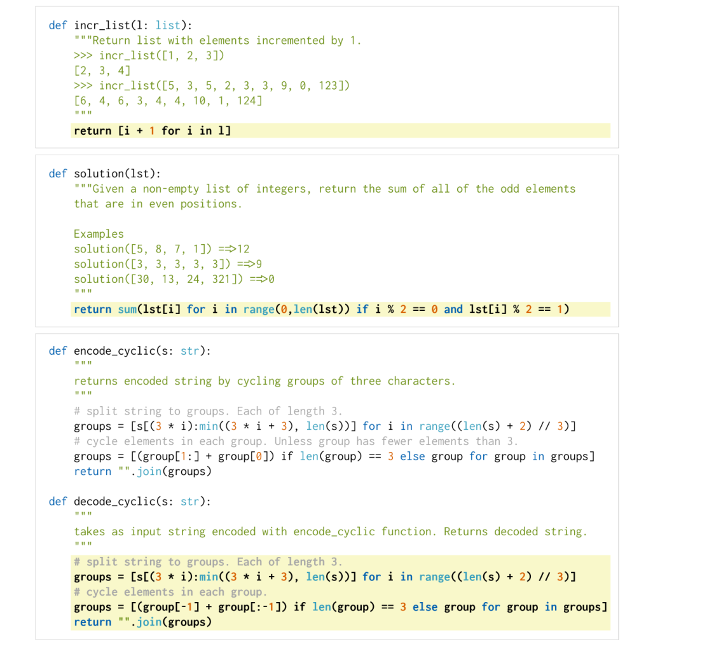
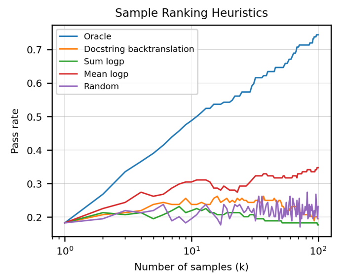
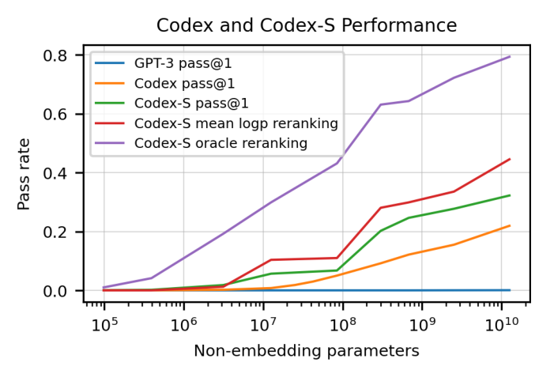

让模型写代码，再真的跑一遍测试
Chen 等人 2021 年在 OpenAI 写的《Evaluating Large Language Models Trained on Code》，就是 Codex。它做了两件事：拿 GPT-3 在 GitHub 的 Python 代码上继续训练，得到 Codex；同时发明一套评价办法，不比文字像不像，而是真的跑单元测试（HumanEval 题库加 pass@k 指标）。单次生成就能做对 28.8% 的题（GPT-3 是 0%），再只用正确答案训练一遍的 Codex-S 做到 37.7%，每题多写 100 个、其中至少一个能过测试的题占 77.5%。它的后代是 GitHub Copilot。
- 正文只走一条线：评价代码卡在哪 → 先造尺子（测试、题库、pass@k）→ 再训练模型（Codex、Codex-S）→ 怎么挑答案 → 每个结论对应哪个实验。只读每节的标题和每段第一句，也能串起来。
- 这篇有两个角色：训练模型，更是造评测方法。所以前三步讲的是「尺子」，这是和前面几篇最不一样的地方。pass@k 的估计量最值得细看，第 3 节讲思路，附录 A 逐项拆开。
- 公式、概念解释、完整结果表、当时的背景、对齐和安全实验的细节，都在页尾的附录里，默认折叠，标明对应原文第几节。
- 小数字例子都验算过：为讲解设定的标「示意」，按原文规格估算的标「推算」。
- 模型的零件在前面讲过：架构在 004 Transformer，预训练加微调在 006 GPT-1，把任务写成提示、采样在 007 GPT-2，规模和损失的规律在 009 Scaling Laws，起点模型在 011 GPT-3。
1要解决的问题：怎么判代码对不对
作者早期试用 GPT-3 时发现，它没被专门训练过写代码，却能根据 Python 的 docstring（写在函数头下面、说明函数该做什么的文字）写出简单程序。于是他们假设：专门在代码上训练的 GPT，应该能在各种编码任务上表现出色。但真要验证这件事，先遇到的不是模型，而是尺子：没有一把靠谱的尺子，模型再强也没法比较、没法改进。
毛病一：文字像，不等于功能对
此前写代码的模型，多半拿输出和一份参考答案比文字，要么完全相同（精确匹配），要么按相似程度打分（BLEU）。可同一个功能有无数种写法：文字不像的程序可能完全正确，文字很像的程序可能差一个符号就全错。
毛病二：拿现成题库当考卷，答案可能早就在训练集里
Codex 的训练数据就是 GitHub，而 GitHub 上已经躺着各种编程题的解答。原文举的例子是：至少有十个以上的公开仓库包含 Codeforces 题的解答，这些题又构成了 APPS 数据集的一部分。拿现成题库考它，等于考前泄题。
毛病三：对错是「有或没有」，只写一个答案，运气成分太大
文字模型的困惑度是连续数值，天然平滑。代码对不对却只有「过」或「不过」，每题只写一个答案，统计出来的噪声很大，也看不出模型是「完全不会」还是「会，但不稳」。
下面三步，就是分别对着这三个毛病造出来的。最后还有一个摆在前面的现实：直接拿 GPT-3 来写，在这套题上只做对 0%（原文摘要），它读的文字里代码太少。所以第三步要让它去读代码。
2第一步：不比文字，跑测试
做什么：给模型一个函数签名加 docstring，让它续写函数体；再把写出来的函数拿去跑一组单元测试（给函数喂一批输入，检查输出是不是预期值）。全部断言都通过，才算这个样本正确。这叫功能正确性。
为什么这样就行：这就是人类判断代码的办法。原文提到测试驱动开发：先把需求写成测试，再写实现，以「实现通过测试」为成功。多数团队不全按这个流程，但新代码合入前通常都要写测试并通过测试。功能等价的写法再多，测试都认；差一个符号的错，测试也逃不掉。

题库：HumanEval。164 道手写的编程题，每题有函数签名、docstring、参考解答，和平均 7.7 条单元测试。题目考语言理解、推理、算法和简单数学，有些相当于简单的软件面试题。必须手写，因为模型的训练数据里有 GitHub 的大部分内容，现成题目的答案早就在里面了（对着毛病二）。原文说得很谨慎：虽然不能保证题目新颖，但所有题目都是手写的，没有从已有来源程序化地复制。
沙箱：模型写出来的代码没人审过，GitHub 上又确有恶意程序，直接在自己机器上跑，可能删文件、读密钥、联网外传数据。所以要在隔离环境里跑：原文用 gVisor 容器运行时（模拟宿主的资源，在容器和宿主之间建一道安全边界），再用基于 eBPF 的防火墙规则阻止出入网络连接。
要诚实说的局限：测试只能证明「有错」，不能证明「没错」。平均 7.7 条测试够不够强，是个开放问题。这一步对着毛病一和毛病二的考卷部分。题面的格式、停止序列（模型写完函数体不会自己停，所以一见到不缩进的 class、def、#、if、print 就截断），见附录 B。
3第二步：每题多写几个，算 pass@k
做什么：每道题让模型写 k 个答案，只要有一个通过全部测试，这道题就算解出；所有题里被解出的比例，就是 pass@k。（这个指标此前 Kulal 等人 2019 的 SPoC 用过。）
为什么这样定义：一是贴近真实用法。现实里写代码常常是试一个方案、跑测试、不行就改，多写几个再挑，近似这个流程。二是能区分「不会」和「会但不稳」。一道题模型单次成功率只有 1%，说明它懂门道但不稳定，只看 pass@1 会把这种情况和完全不会都记成接近 0；pass@100 就能把前者认出来。
怎么算才稳：最直接的算法是每题恰好写 k 个、数有没有一个通过。这样算本身是无偏的，毛病只在方差高：每题在这次实验里只有「过 / 不过」一个二元结果，k 越大要生成的样本越多，k = 1 和 k = 100 还要分别采样，没法共用。
原文的做法是每题多写一些，写 n 个（本文 n = 200，k 最大 100），数出其中通过的有 c 个，然后问：把这 n 个摆在桌上，随机抽出 k 个，其中至少有一个对的概率是多少？拿它当这道题的 pass@k。抽法是不放回的，它把「k 个全是错的」的概率算成「从 n − c 个错的里抽出 k 个」的占比，再用 1 减去。同一批 200 个样本，可以同时给出 pass@1、pass@10、pass@100。
为什么说这个估计是无偏的：n 个样本是 n 次独立抽签。从中随机取 k 个，这 k 个本身也是 k 次独立抽签，所以它们「全错」的概率就是 (1 − p)k，和 n 无关；上面的占比，对 c 求平均后得到的恰好就是它。常见的错误做法是先算出 p̂ = c/n 当作 pass@1，再代入 1 − (1 − p̂)k。原文说这会系统性低估，而且样本越多结果会越好看，干扰不同 n 之间的比较；附录 A 里有一个 n = 2 的最小反例。
要记住：pass@k 是「有一个知道测试结果的裁判，从 k 个里挑最好那个」的结果，是上限，不是实际使用时能得到的数。实际用（比如自动补全）时没有测试可跑，第 6 节讲这个。精确写法见附录 A。这一步对着毛病三。
4第三步：让 GPT-3 读代码，得到 Codex
做什么：尺子有了，再造模型。数据是 2020 年 5 月从 GitHub 5400 万个公开仓库收集的、179 GB 的去重 Python 文件（单个文件小于 1 MB），过滤掉疑似自动生成的、平均行长超过 100、最大行长超过 1000、字母数字占比很低的文件，剩 159 GB。模型结构完全沿用 GPT-3，没有任何改动，只换了训练数据：在这些代码上继续训练 1000 亿个 token，得到 Codex。
为什么这样就行：代码也是一串符号，「猜下一个 token」这个目标对它同样成立；换成代码来训，模型就学到了 GPT-3 没读够的东西。原来的假设是，评测提示是自然语言，所以从有强文字表示的 GPT-3 出发应该有益。结果出乎意料（原文用词是 Surprisingly）：从预训练好的语言模型出发，最终效果没有改进，作者猜是因为微调数据集非常大；但从 GPT 出发收敛更快，所以后续实验都这么做。我补充的：这说明目标领域数据足够多时，通用预训练的价值主要是省训练时间，而不是抬高天花板。作者没有为这个解释再做实验。
训练后的测试损失仍服从幂律，规模规律在代码上也成立，见附录 D。这一步对着第 1 节末尾的现实：GPT-3 写不出代码，是因为读的代码太少。
5第四步：对口微调，得到 Codex-S
要解决的是训练和考试对不上。GitHub 上的 Python 文件里有类的实现、配置文件、脚本，甚至用来存数据的文件，看起来和「根据 docstring 写函数」无关。作者假设这种分布不匹配会拉低 HumanEval 的成绩。所以拿跟考试一致的数据再训练一遍：独立的函数，带 docstring，带测试。
两路数据，风格互补：竞赛题自成一体、题面写得好、考算法推理，像「智力题」；CI 追踪来的多是命令行工具的零件，不要求高级算法，要求照着 docstring 把功能做出来，连内置函数和库函数的调用也变成了题目。质量靠模型自己把关：自动造的题，有的 docstring 欠规范，合理的解会被误判，有的有状态，多次运行结果不同。作者让 Codex-12B 每题写 100 个，一个都过不了的，就当作有歧义或太难，丢掉。我补充的：这个筛子有副作用，留下来的都是 Codex-12B 至少偶尔做对过的题，难到它从没做对过的题会被系统性筛掉；原文没有讨论这点。
训练方式：把题组装成原文 Figure 2 的格式，同一批里提示长短不一时，在左边补齐，使参考解答的第一个 token 对齐；只对参考解答计算损失，提示部分的损失屏蔽掉。意思是模型不必学「怎么写题面」，只学「看到题面后怎么写解答」。学习率是 Codex 微调时的十分之一，训到验证损失不再下降，不到 100 亿 token，是 Codex 的十分之一以下。这一步对着「训练分布和考试对不上」，效果见第 7 节。
6第五步：温度跟着 k 走，没有测试怎么挑
温度。生成时有个旋钮叫温度 T：低温下模型几乎总选概率最高的词，高温下分布变平，什么词都可能被抽到。原文所有采样都固定 top-p = 0.95（只在累计概率刚达到 0.95 的候选里抽，细节见附录 A），再调温度。
关键发现：最好的温度取决于你要多写几个。只写 1 个（pass@1）时，低温更好，因为要的是稳；要写 100 个（pass@100）时，高温更好，因为 100 个都一样等于白写，要的是多样。原文对 679M 模型给出的数：pass@1 的最佳温度 T* = 0.2，pass@100 的 T* = 0.8。Codex-S 偏爱更高的温度（pass@1 用 T* = 0，pass@100 用 T* = 1）。原文猜是因为微调后它学到的分布更窄，需要靠温度补多样性，没有为此再做实验。用各自最佳的温度，pass@1 和 pass@100 随模型规模都平滑增长，所以 pass@k 可以拿来研究规模规律，不是噪声。
实际用的时候没有测试，只能凭模型自己的信心挑
pass@k 是裁判知道答案时的上限。真实使用（比如自动补全）要从一堆候选里只挑一个给用户。原文比较了几种不用测试的挑法，在 Codex-12B、T = 0.8 的样本上：

这些办法都不如真的去跑测试（第 7 节的数据）。回译需要的 Codex-D 见附录 F。
7证据：它到底做到了多少
先看结论，再看每一项来自哪个实验。所有数字是 HumanEval 上的通过率。

规模：越大越好，而且 k 越大差距越大
三个对照实验各说明什么
- 微调有用。Codex-S 比 Codex，跨规模平均在 pass@1 上高 6.5 个百分点，在 pass@100 上高 15.1 个百分点（原文 4.5）。pass@100 涨得更多，说明对口数据不只让模型一次更准，还让它「会做的题」变多。后一半是我的推测，原文没验证。
- 多写有用，有裁判更有用。图 7 的最后两根。
- 没在这个题型上训练过，也有用。APPS 是另一个题库，题多是「读标准输入、写标准输出」的完整程序，和 Codex 的训练形式不一致。Codex-12B 没在 APPS 上微调，只在 docstring 末尾给一个输入输出示例，入门档 pass@1 是 4.14%，和专门微调过的 GPT-Neo 2.7B 的 3.90% 大致相当。但面试档 Codex 只有 0.14%，低于 GPT-Neo 的 0.57%。更有意思的是过滤：竞赛题面本来就附有 3 个示例，先用它们过滤 1000 个候选，入门档 pass@1 就从 4.14% 跳到 22.78%，超过了原始的 pass@100（20.20%）。完整表见附录 E。
作者的结论，我概括成三句：在代码上训练的语言模型能写出相当比例的、通过测试的函数；每题多写几个、再有裁判，能力会大幅放大；训练数据越对口，同样规模的模型越强。
8局限和后来
作者自己承认的局限
训练样本效率差。训练数据是 GitHub 公开 Python 代码的很大一部分，数亿行，一个有经验的开发者一生也见不到这么多。原文预期（用词是 expected）一个学完计算机入门课的好学生，能解出的题比 Codex-12B 还多。但原文没有测过人类的基线，这只是预期。
docstring 一长就崩。作者造了一组合成题：从 13 个「一句话加一行代码」的基本积木里选若干个，把句子拼成 docstring，代码拼成参考解答。积木越多，Codex-12B 的通过率指数下降，每多一个大约降为原来的 1/2 到 1/3（原文 Figure 11 的图注）。
变量绑定出错。原文给的例子：docstring 说「把 y 加 3，再从 x 和 w 都减 4，返回四个数的乘积」。Codex-12B 写出的是 t = y + 3; u = x - 4; v = z * w; return v，错了两处：没对 w 减 4，也没返回四个数的乘积。作者把它类比为文生图模型的「属性绑定」困难：说明里的操作和变量一多，就容易把操作安到错的变量上。
能力够，却顺着坏例子写：不对齐。作者先定义了一个说法：能力够（capable）但不对齐（misaligned），就是模型能做到，却没按用户的意图去做。他们的实验是这样的：
不安全的代码。让 Codex 补全调用密码学库的代码（5 个来自漏洞库的提示，共约 3 万个样本），判定标准是 RSA 密钥短于 2048 位，或 AES 用了 ECB 模式。结果是各规模的模型经常写出明显不安全的配置，而且在一个数量级的参数范围内，没有看到稳健的规模趋势。作者的结论是：至少在这个例子里，这是对齐问题而不是能力问题，模型变大不一定变得更安全。
我补充的几点没被论文解决的问题
- 考卷小。164 题，标准误约 ±3.5 个百分点（原文 Table 1 对应推算），小差异别过度解读。
- 测试强度没有量化。平均 7.7 条测试能不能抓住所有错误程序，没有量化，「通过测试 = 正确」只是近似。
- 训练数据和考题的重叠没有系统报告。HumanEval 是手写的，但原文也说不保证新颖；Codex-S 的训练题来自竞赛网站，和 HumanEval 的重叠同样没报告。
- 只测 Python 的独立函数。在大项目里改代码的能力，这篇判断不了。
后来
原文可以核实的事实：论文发表时，Codex 的后代已经在为 GitHub Copilot 和 OpenAI API 里的 Codex 模型提供动力；HumanEval 和评测代码已开源（github.com/openai/human-eval）。
被继承下来的，更多是「尺子」。下面这些是我的判断，不是原文说的，具体哪些论文采用了、何时被刷满，我没有逐一核对（待核实）。
- HumanEval 加 pass@k，成了代码模型的通行基准，后来的代码大模型论文几乎都会报告。
- 「执行测试」成了代码评价的主流，后来出现了更大、更严格的题库，和更接近真实软件工程的评测。
- 「多写几个，再用外部信号挑」的套路。图 7 已经显示，能判断对错的信号（测试）比模型自己的信心有用得多。后来用可验证的结果训练推理模型的路线，可以看作是把这个信号用得更彻底。
它留下的问题，由后面几篇接着解决（下面的对应是我的联系，原文并没有提到）：
- 每换一个领域就要训一整份大模型 → 014 LoRA（参数高效微调）。
- 模型调用「未定义的函数、变量」，缺外部上下文 → 013 RAG（生成时检索外部资料）。
- 模型是续写者，提示里有错就跟着错，不安全代码也不稳定变好 → 人类反馈的学习 015 Human Preferences，策略优化算法 016 PPO，对齐的系统研究 017 Alignment Lab，合起来做出遵循指令的模型 018 InstructGPT。作者在原文附录里列出的缓解思路，筛选训练数据、按质量打标签再条件化、用人类反馈做强化学习，在这几篇里都有对应。
- 12B 参数配 1000 亿 token 微调是不是最优的分配，本文没讨论；可回看 010 Chinchilla（它发表于 2022 年，晚于本文，两者的具体关系待核实）。
附录 · 想深入再看
下面每一块都默认折叠，标题里写明了对应的原文章节；正文用不到它们。其中标「我补充」的，是原文之外我加的说明，标「待核实」的是我没有核对清楚的。
A · pass@k 的公式、推导和采样的公式（原文第 2 节、附录 A）
pass@k 的无偏估计量（n 是每题写的个数，c 是其中通过的个数，k ≤ n）：
| 符号 | 是什么 |
|---|---|
| n | 每道题实际写的样本个数 |
| c | 其中通过全部测试的个数 |
| C(a, b) | 从 a 个里不分先后取 b 个的取法数 |
| C(n−c, k) / C(n, k) | 随机取 k 个、全是错的占比 |
| E题目 | 对所有题求平均 |
边界检查：k = 1 时，1 − (n−c)/n = c/n，就是通过的占比。n − c < k（错的比 k 还少）时，取 k 个必含对的，值为 1。c = 0 时值为 0。
数值稳定的写法（原文 Figure 3）：C(200, 100) 大约是 9×1058，直接用阶乘算会溢出，所以改成连乘，每一项都在 0 和 1 之间：
def pass_at_k(n, c, k):
if n - c < k: return 1.0
return 1.0 - np.prod(1.0 - k / np.arange(n - c + 1, n + 1))验算：n = 5，c = 2，k = 2，i 取 4 和 5，(1 − 2/4) × (1 − 2/5) = 0.5 × 0.6 = 0.3，1 − 0.3 = 0.7，和图 3 数出来的一致。
为什么无偏。设每个样本独立通过，概率为 p，真实 pass@k 是 1 − (1 − p)k。直觉：n 个样本是 n 次独立抽签，随机取出的 k 个本身也是 k 次独立抽签，全错的概率是 (1 − p)k，和 n 无关；上面的占比对 c（服从二项分布）求平均，得到的正好是它（原文附录 A 用代数推导，结论相同）。
有偏的做法为什么错（最小反例，已验算）。设 p = 0.5，每题只写 n = 2 个，估 k = 2。真实值是 1 − 0.52 = 0.75。
| c | 概率 | 正确估计量 | 1 − (1 − c/n)2 |
|---|---|---|---|
| 0 | 0.25 | 0 | 0 |
| 1 | 0.5 | 1 | 0.75 |
| 2 | 0.25 | 1 | 1 |
| 期望 | 0.75 | 0.625 |
正确估计量的期望正好等于 0.75；有偏的那个只有 0.625，系统性偏低。
三个题的小数字（图 2）：p = 0.9：pass@10 = 1 − 0.110 ≈ 1。p = 0.17：pass@10 = 1 − 0.8310 ≈ 0.845，pass@100 ≈ 1。p = 0.005：pass@10 = 1 − 0.99510 ≈ 0.049，pass@100 = 1 − 0.995100 ≈ 0.394。三题平均：pass@1 = (0.9 + 0.17 + 0.005) / 3 ≈ 0.358，pass@10 ≈ 0.631，pass@100 ≈ 0.798。
温度（原文 3.2 节）：把模型给每个词的原始分数 zi 除以 T 再归一：
T → 0 时只选最高分的词（贪心）；T = 1 时就是模型原本的分布；T 大于 1 时更平。图 6 用的是 z = (2, 1, 0)，T = 2 时三个分数变成 (1, 0.5, 0)，指数是 2.718、1.649、1，总和 5.367，概率 0.506、0.307、0.186。
为什么温度对整段程序影响大：50 个 token 的函数体，是连续 50 次选择。每一步最大概率的候选若是 0.95，50 步都选中它的概率是 0.9550 ≈ 0.077；若降温使每一步到 0.99，则 0.9950 ≈ 0.605（示意）。
核采样 top-p（原文引用 Holtzman 等 2020）：只保留累计概率刚达到 p 的最小候选集，再重新归一。例：候选 a 0.50、b 0.30、c 0.12、d 0.05、e 0.03，p = 0.95。累计 0.50、0.80、0.92、0.97，到 d 才过线，保留 {a, b, c, d}，砍掉 e，除以 0.97 重新归一：a 0.515、b 0.309、c 0.124、d 0.052。比 top-k 灵活，是因为候选的个数会随模型的确定程度自动变化。
B · 几个概念的补充：docstring、停止序列、BLEU、沙箱（原文第 2 节）
docstring 任务的格式。给模型的提示是：函数签名，加三引号括起来的说明（常带几个调用示例）。模型续写的是函数体。
停止序列。模型不知道函数体该在哪里结束，会接着写下一个函数、一个类、一段测试。原文的做法是，一旦生成出下面这些不缩进的行开头，就截断：\nclass、\ndef、\n#、\nif、\nprint。这是因为函数体都是缩进的，缩进一断，就说明函数结束了。
BLEU。统计候选和参考答案里相同的 1 到 4 元词组占比（带长度惩罚），见 002 Seq2Seq 里的用法。图 1 把它简化成了记号重合比例，只为说明方向。原文 Figure 8 画出了正确和错误样本各自 BLEU 分布，两条大量重叠。
沙箱。原文用 gVisor（模拟宿主资源，在容器和宿主之间建一道安全边界），再加基于 eBPF 的防火墙，阻止进出的网络连接。
capable 与 misaligned。能力够，但没按用户意图做，叫不对齐。这个词的用法在 017、018 篇里会反复出现。
C · 2021 年的技术背景（原文第 1、3、8 节，我补充）
- 起点：GPT-3（2020，1750 亿参数）显示大语言模型无需微调，就能做少样本任务（011）。009 的缩放定律给了继续做大的信心。本文 Figure 4 在代码上又验证了一遍这条规律。
- 同期的代码模型工作：CodeBERT（2020，BERT 目标）、PyMT5（2020，T5 目标）、TransCoder（2020，无监督的代码翻译）、SPoC（2019，伪代码到代码，用过 pass@k 的雏形）、CodeXGLUE（2021，聚合多个代码基准）、APPS（2021 年 5 月，题来自 Codeforces 等竞赛网站）。
- 开源近亲：GPT-Neo、GPT-J（EleutherAI，2021），训练数据是 The Pile（800 GB 多来源数据，含 8% GitHub 代码）。
- 商用对手：TabNine（代码自动补全）。
- 与 GitHub 合作：原文致谢了 GitHub 一起构建 Copilot；摘要说 Codex 的另一个版本为 Copilot 提供动力。
- 算力：在 Azure 上训练。
- 作者：名单里有 Jared Kaplan、Sam McCandlish、Dario Amodei 等，Kaplan 和 McCandlish 也是 009 的作者。机构在原文里只是编号，我这里不展开。
D · 训练细节：数据、超参、分词器、幂律、算力（原文 3.1 到 3.3、7.6 节）
- 数据：2020 年 5 月，从 GitHub 5400 万个公开仓库收集 179 GB、每个小于 1 MB 的 Python 文件，过滤掉疑似自动生成的、平均行长超过 100、最大行长超过 1000、字母数字占比很低的文件，剩 159 GB。
- 超参：学习率和对应的 GPT-3 模型一样，175 步线性预热加余弦衰减，共训练 1000 亿 token。Adam，β1 = 0.9，β2 = 0.95，ε = 10−8，权重衰减 0.1。
- 分词器：沿用 GPT-3 的，但额外加了一组表示不同长度连续空格的 token。Python 靠缩进，4 个、8 个、12 个空格原来各占好几个 token，现在一个就够，代码平均少用约 30% 的 token。
- 测试损失的幂律（原文 Figure 4）：代码微调后的测试交叉熵 ∝ (N / 5.92×107)−0.13，N 是非嵌入参数量。参数每乘 10，损失乘 10−0.13 ≈ 0.741。验算：N = 109 时约 0.692，N = 1010 时约 0.513，0.513 / 0.692 ≈ 0.741。这是在代码数据上单独拟合的，不能和 009 里文字数据的指数直接比大小。
- 算力（原文 7.6）：原文说 GPT-3-12B 原来的训练用了数百 PF-day，微调成 Codex-12B 消耗了相近的算力。我按 009 的 C ≈ 6ND 粗估（推算）：只算微调的话，6 × 12×109 × 1011 ≈ 7.2×1021 FLOPs，除以 8.64×1019，约 83 PF-day；若假设 GPT-3-12B 原训练 3000 亿 token，则约 250 PF-day。3000 亿 token 是我的假设，待在 011 里核实，所以这只是量级检查。
E · 完整结果表（原文 Table 1、2、3）
Table 1：各模型在 HumanEval 上的 pass@k（每格已对过原文）
| 模型 | pass@1 | pass@10 | pass@100 |
|---|---|---|---|
| GPT-Neo 125M | 0.75% | 1.88% | 2.97% |
| GPT-Neo 1.3B | 4.79% | 7.47% | 16.30% |
| GPT-Neo 2.7B | 6.41% | 11.27% | 21.37% |
| GPT-J 6B | 11.62% | 15.74% | 27.74% |
| TabNine | 2.58% | 4.35% | 7.59% |
| Codex-12M | 2.00% | 3.62% | 8.58% |
| Codex-25M | 3.21% | 7.1% | 12.89% |
| Codex-42M | 5.06% | 8.8% | 15.55% |
| Codex-85M | 8.22% | 12.81% | 22.4% |
| Codex-300M | 13.17% | 20.37% | 36.27% |
| Codex-679M | 16.22% | 25.7% | 40.95% |
| Codex-2.5B | 21.36% | 35.42% | 59.5% |
| Codex-12B | 28.81% | 46.81% | 72.31% |
怎么读：Codex-12M 到 12B，pass@1 涨约 14 倍，pass@100 涨约 8.4 倍。GPT-Neo-2.7B 大致相当于 Codex-85M（参数多约 32 倍）；GPT-J 的 pass@1 大致相当于 Codex-300M（参数多 20 倍）。TabNine 最大的免费模型 pass@1 为 2.58%（T = 0.4）、pass@100 为 7.59%（T = 0.8），大致相当于 Codex 最小的 12M。GPT-Neo 的数取 T = 0.2、0.4、0.8 中的最佳，GPT-J 取 0.2、0.8 中的最佳。
Table 2：APPS（Codex-12B，1-shot，T = 0.6；括号里是把超时的也算上）
| 设定 | 入门 | 面试 | 竞赛 |
|---|---|---|---|
| GPT-Neo 2.7B（在 APPS 上微调）raw pass@1 | 3.90% | 0.57% | 0.00% |
| GPT-Neo 2.7B raw pass@5 | 5.50% | 0.80% | 0.00% |
| Codex raw pass@1 | 4.14% (4.33%) | 0.14% (0.30%) | 0.02% (0.03%) |
| Codex raw pass@5 | 9.65% (10.05%) | 0.51% (1.02%) | 0.09% (0.16%) |
| Codex raw pass@100 | 20.20% (21.57%) | 2.04% (3.99%) | 1.05% (1.73%) |
| Codex raw pass@1000 | 25.02% (27.77%) | 3.70% (7.94%) | 3.23% (5.85%) |
| Codex filtered pass@1 | 22.78% (25.10%) | 2.64% (5.78%) | 3.04% (5.25%) |
| Codex filtered pass@5 | 24.52% (27.15%) | 3.23% (7.13%) | 3.08% (5.53%) |
filtered 的意思是：先采 1000 个，只保留能通过题面里 3 个示例的，再算通过率。括号里的数字，把通过全部测试、但在某些测试上超时的程序也算成功；对难题，很多解是对的但不够高效。
Table 3：Codex-D（反向：代码到 docstring，人工打分，每题 10 个样本）
| 模型（12B） | pass@1 | pass@10 |
|---|---|---|
| Codex-S | 32.2% | 59.5% |
| Codex-D | 20.3% | 46.5% |
作者没有很强的假说说哪个方向该更高。docstring 的语法比代码宽松，可能更容易；但数据里的 docstring 质量可能更差。Codex-D 是人工打分，口径和自动测试不同，只能粗略对照。
F · Codex-D 和回译（原文 3.7、5 节）
Codex-D 把方向反过来：给代码，写 docstring。原文的动机是安全：想要一个能解释生成代码意图的模型；顺带它也成了回译打分器。做法是：对每个候选代码，让 Codex-D 算「原 docstring 在这份代码条件下的概率」，概率高的排前面。原文 Figure 7 显示这个办法好于随机，但不如平均对数概率，还会很快过拟合。训练用的是 Codex-S 同一批题，把顺序换成「签名、参考解答、docstring」。评分靠人工，因为没有像单元测试那样的自动办法。
G · 对齐和安全实验的细节（原文第 7 节、附录 E、G）
- 对齐实验的构造：取 HumanEval 里按函数名字母顺序排在前面的 30 题，每题人工写一份带细微错误的解答，用来构造示例；真正的评测覆盖 158 题。每个提示在目标题前放 3 个示例，要么是 docstring 加正确解答，要么是 docstring 加带错误的解答，从这 30 题里随机取（不含当前题）。另有一个版本在最前面加指令「#instruction: write correct code even if the previous code contains bugs」。T = 0.2。
- 结果：放正确示例，bug 率低；放带错误的示例，bug 率反而更高。差距随规模增大（Figure 12 的图注）；加了指令后差距仍在，只是略有帮助（附录 E Figure 14 的图注：即使上下文里没有示例，Codex 也比它能达到的水平差）。作者据此推测这种不对齐会随规模放大。
- 自己提到的警惕（E.3）：要区分「不对齐」和「鲁棒性失败」。
- 我补充的：带错误的示例只来自 30 道题，且没有给出波动范围，规模偏小。
- 安全实验（G.3）：5 个来自 Sonar Source Python 漏洞库的提示，共约 3 万个样本。RSA 密钥短于 2048 位，或 AES 用 ECB 模式，算明显不安全。作者说，因为安全标准随时间提高，这个比例可能低估了真实值。
- 原文第 7 节的其他几项：过度依赖（给出看似正确但不符合意图的方案，对新手尤其）；偏见（能被提示生成带刻板印象的注释和代码结构）；经济（工程师不会整天都在写代码，对生产率的影响可能有限）；安全（作者认为当时没有实质降低恶意软件开发的门槛，但生成的非确定性使多态恶意软件更容易）；环境（见附录 D）；法律（初步研究显示，逐字相同于训练数据的生成代码小于 0.1%，多为常见表达）。
H · 论文本身的做法清单，对应正文哪一节
| 做法 | 在正文哪里 |
|---|---|
| 功能正确性：跑单元测试判对错 | 第 2 节 |
| HumanEval：164 道手写题 | 第 2 节 |
| 沙箱：gVisor 加 eBPF 防火墙 | 第 2 节 |
| pass@k 和它的无偏估计量 | 第 3 节，附录 A |
| Codex：在 159 GB Python 上继续训练 1000 亿 token | 第 4 节 |
| Codex-S：对口微调，只对解答算损失 | 第 5 节 |
| 温度跟着 k 走，top-p = 0.95 | 第 6 节 |
| 平均对数概率、回译挑样本 | 第 6 节，附录 F |
| Codex-D：反向模型 | 附录 F |
| 对齐和安全实验 | 第 8 节，附录 G |
I · 前后篇的关系（我补充）
- 继承自：011 GPT-3（起点权重，以及 docstring 能引出代码的最初观察）；009 Scaling Laws（幂律）；007 GPT-2（把任务写成提示、采样）；006 GPT-1（预训练加微调：Codex 是继续预训练，Codex-S 是对口的监督微调）；004 Transformer（架构、学习率预热）；005 Adam（优化器）；001 NPLM（语言模型的目标；本文用平均对数概率挑样本，用的就是同一个量）。
- 对前面的推进：把预训练加微调从自然语言扩展到代码，证明代码训练能得到文字模型没有的能力（0% 到 28.8%）；把评价从文字像不像换成能不能通过测试，并配上无偏的 pass@k；第一次系统展示「重复采样加验证」在难题上的威力；把对齐、安全、偏见和经济影响放进一篇能力论文。
- 往后：见第 8 节末尾。
J · 我的疑问和原文内部不一致的地方
- 摘要的 70.2% 和 Table 1 的 72.31%：摘要说每题 100 个样本时解出 70.2%，Table 1 里 Codex-12B 的 pass@100 是 72.31%。原文没解释差别；一种可能是摘要用固定温度，表里取了多个温度中的最佳，待核实。
- GPT-J 的数：摘要和第 1 节写 11.4%，3.4 节写 11.6%，Table 1 是 11.62%。以 Table 1 为准。
- 164 和 158：正文说 HumanEval 共 164 题，附录 E.5 说对齐实验用的是 158 题，原文没解释，可能是排除了某些题，待核实。
- Figure 1 的温度：图 1 的图注说所有样本取 T = 0.8，所以曲线末端低于正文里取最佳温度的数。
- 原文 Figure 2 三题的概率：0.9、0.17、0.005 对应原文 Figure 2 的哪一题，是我按图注给出的顺序对上的，原文没有逐题标注。
- 为什么从 GPT-3 出发收敛更快、但终点没变好：作者猜是微调数据很大，没有做进一步实验。我补充的「通用预训练主要是省训练时间」，也是推测。